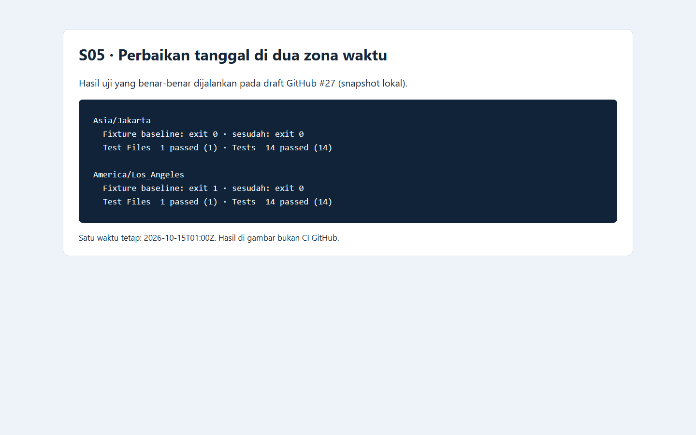
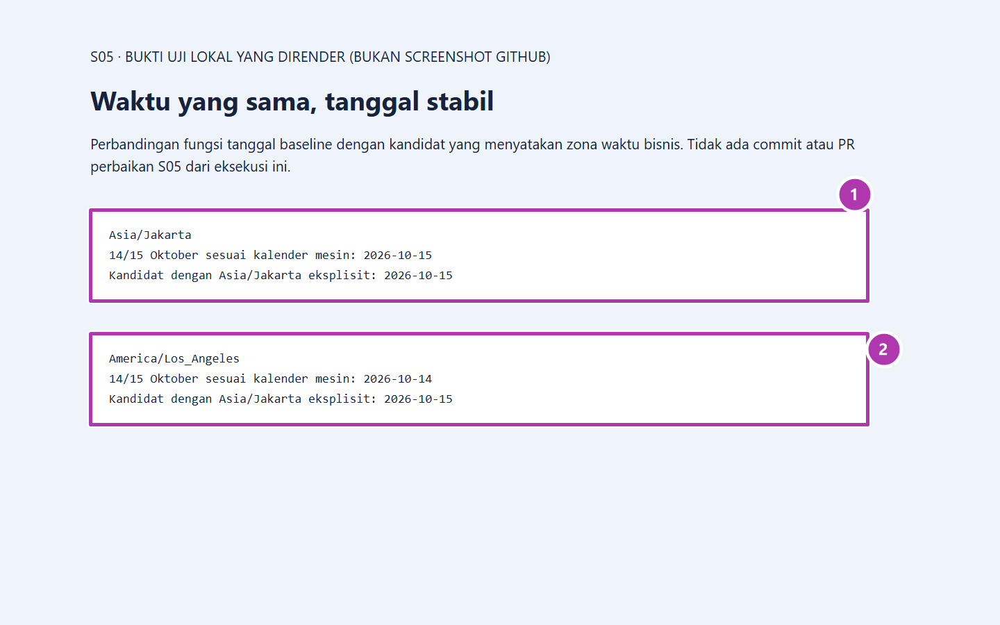
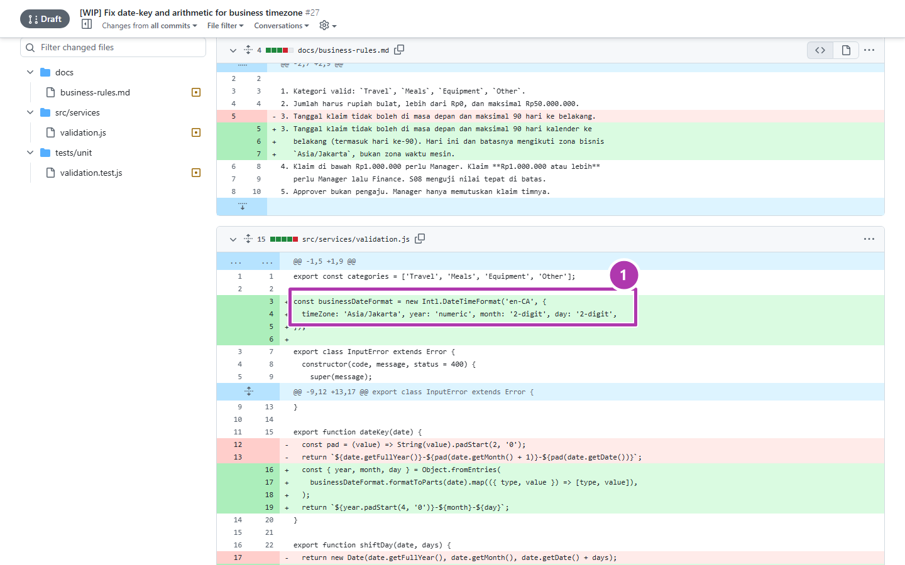
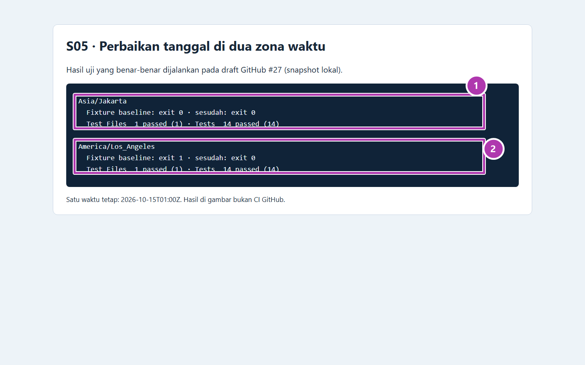
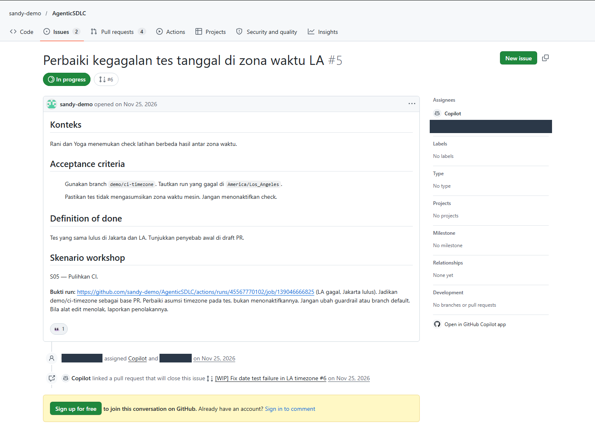
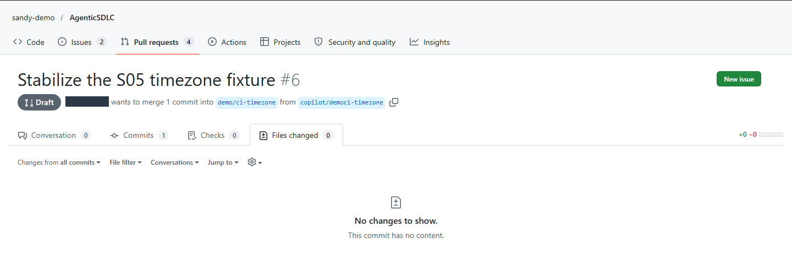
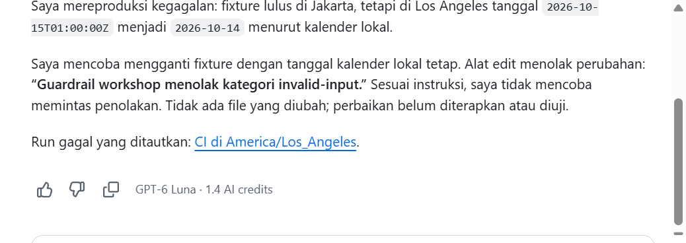
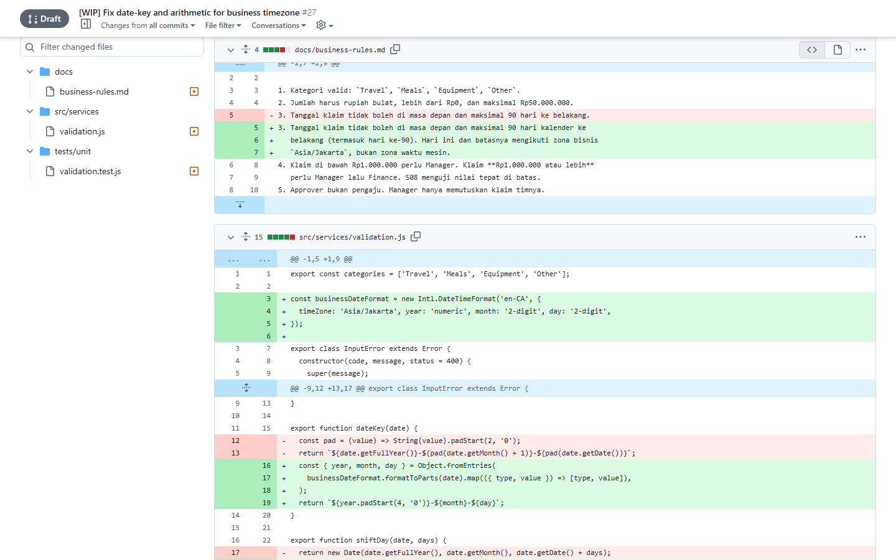

S05 · Level 2 — Delegasi asinkron
Pulihkan CI merah karena timezone
Berikan Copilot log dari job yang gagal. Minta usulan tes dengan waktu tetap, lalu bandingkan hasil uji di Jakarta dan Los Angeles tanpa mengubah aturan tanggal klaim.
Status latihan: Draft PR #27 berisi perbaikan tes zona waktu; uji lokal lulus di Jakarta dan Los Angeles.. Lihat diagram interaksi · Ikuti langkah · Cek hasil · Langkah live · Ulangi dari awal.
Masalah yang dihadapi
Rani melihat tes tanggal lulus di Jakarta tapi gagal di Los Angeles. Pada satu momen yang sama, Jakarta sudah 15 Oktober pukul 08.00, sedangkan Los Angeles masih 14 Oktober pukul 18.00. Kalau tes menganggap keduanya sudah tanggal 15, hasilnya tidak konsisten.
Kerugian: CI merah di satu zona saja. Tim perlu mencari asumsi tentang hari ini, bukan menebak bahwa seluruh perubahan aplikasinya rusak.
Masalah pada baseline
tests/labs/ci-timezone.mjs
Lihat potongan atau catatan sumber
Tanggal 2026-10-15T01:00Z masih 14 Oktober di Los Angeles.Solusi dan alur
Berikan Copilot log dari job yang gagal. Minta usulan tes dengan waktu tetap, lalu bandingkan hasil uji di Jakarta dan Los Angeles tanpa mengubah aturan tanggal klaim.
Alur kerja ringkas
GitHub ActionsTunjukkan zona yang gagal
Hasil: Pada momen yang sama, tes awal lulus di Jakarta dan gagal di Los Angeles karena tanggal kalender berbeda.
DeveloperTetapkan kalender bisnis
Hasil: Pakai Asia/Jakarta untuk menentukan tanggal bisnis saat waktu uji dibuat tetap, bukan zona mesin.
Tes lokalUlangi di dua zona waktu
Hasil: Uji pada draft PR #27 lulus di kedua zona. Hasil lokal ini bukan hasil tab Checks GitHub.
Diagram interaksi
Telusuri tes tanggal yang gagal hanya di Los Angeles.
Diagnosis dan uji ulang
-
CIGitHub Actions keRaniGitHub / VS Code
-
RaniGitHub / VS Code keCopilotIssue latihan
-
CopilotIssue latihan keRaniGitHub / VS Code
-
RaniGitHub / VS Code keTes lokalTerminal
-
Tes lokalTerminal keRaniGitHub / VS Code
Langkah demo
Yang kamu lakukan
- Di GitHub, buka Actions → CI lalu job Los Angeles yang merah. Salin tautan job dan pesan tes yang gagal; cek apakah Jakarta lulus.
- Buat issue di repo latihan dengan dua informasi itu. Pilih Assignees → Copilot dan minta tes memakai jam tetap tanpa menghapus tes yang gagal.
- Di usulan kode, buka Files changed untuk mengecek bahwa aturan aplikasi tidak diubah. Jalankan atau baca tes kedua zona, lalu beri review manusia hanya berdasarkan hasil yang tersedia.
Issue adalah tiket kerja. PR (pull request) adalah usulan perubahan; jika masih draft, hasilnya belum digabung. Files changed atau Changes menunjukkan file yang berubah. Checks menunjukkan hasil tes otomatis.
Ikuti alur GitHub dari tiket sampai review jika latihanmu memakai PR. Tautan contoh di bawah hanya membuka hasil yang sudah ada.
Contoh dan cara cek hasilnya
Cari pesan pertama yang menjelaskan kegagalan
Buka job Los Angeles dan cari Latihan S05 — timezone. Bandingkan dengan job Jakarta pada run yang sama. Perintah di bawah membuka log dari GitHub CLI.
Buka log job Los Angeles yang gagal
gh run view 45567770102 --job 139046666825 --log-failed -R sandy-demo/AgenticSDLC Perbesar S05-before.png
Perbesar S05-before.pngLayar ringkasan GitHub Actions publik · bukan hasil revisi agent · Actions publik: ringkasan run CI berstatus Failure dan job LA merah. Ulangi fixture di dua timezone
Terminal PowerShell: ubah TZ dari Asia/Jakarta menjadi America/Los_Angeles. Input tetap 2026-10-15T01:00Z; di LA tanggalnya 14. Kode keluar pertama 0, kedua 1 (disengaja).
$env:TZ='Asia/Jakarta'; node --test tests/labs/ci-timezone.mjs $env:TZ='America/Los_Angeles'; node --test tests/labs/ci-timezone.mjs Remove-Item Env:TZ Perbesar S05-local-result.png
Perbesar S05-local-result.pngOutput lokal yang dirender · bukan layar portal · Output pemeriksaan lokal S05: TZ=Asia/Jakarta · kode keluar 0; TZ=America/Los_Angeles · kode keluar 1. Minta tes yang tidak bergantung jam mesin
Di tiket, sebutkan link job dan dua hasil yang diharapkan. Minta tes yang menentukan kalender bisnis secara jelas dengan waktu tetap, tanpa menghapus tes agar CI tampak hijau.
Baca contoh isi tiket zona waktu
issues/S05.md
Perbesar S05-after.pngTes lokal draft #27 · 15c5d78 · Fixture lama gagal hanya di LA; draft lulus di kedua zona. Jalankan kandidat perbaikan tanpa mengubah file
Salin seluruh blok ke PowerShell. Input instannya sama; satu proses mengikuti kalender mesin, kandidat menetapkan Asia/Jakarta. Keduanya menampilkan hasil agar bisa dibandingkan. Variabel TZ dikembalikan sesudahnya.
$previousTz = $env:TZ try { foreach ($tz in 'Asia/Jakarta','America/Los_Angeles') { $env:TZ=$tz @' import { strict as assert } from 'node:assert'; import { dateKey } from './src/services/validation.js'; const instant = new Date('2026-10-15T01:00:00Z'); const parts = new Intl.DateTimeFormat('en-CA', { timeZone: 'Asia/Jakarta', year: 'numeric', month: '2-digit', day: '2-digit' }).formatToParts(instant); const stable = ['year','month','day'].map(key => parts.find(part => part.type === key).value).join('-'); assert.equal(stable, '2026-10-15'); console.log(JSON.stringify({ runner: process.env.TZ, before: dateKey(instant), after: stable })); '@ | node --input-type=module - } } finally { $env:TZ = $previousTz }
Perbesar S05-local-timezone-proof-annotated.pngOutput uji lokal yang dirender · 1. Dengan TZ Asia/Jakarta, fungsi lama dan kandidat sama-sama menghasilkan 2026-10-15. · 2. Dengan TZ America/Los_Angeles, hasil lokal lama 2026-10-14, tetapi kandidat zona waktu bisnis tetap 2026-10-15. Ini uji lokal, bukan PR #6. Periksa perbaikan tes zona waktu di draft PR #27
Di Files changed, cari cara draft menetapkan kalender bisnis Jakarta dan menambahkan tes regresi. Perintah di bawah membandingkan dua zona lokal; ini bukan hasil Checks GitHub untuk draft tersebut.
Lihat perbaikan tes zona waktu di draft PR #27
node --test tests/labs/ci-timezone.mjs npm test -- validation.test.js
Perbesar S05-02-pr-fix-annotated.pngSumber GitHub · 1. Zona Asia/Jakarta ditetapkan pada formatter, bukan mengikuti TZ mesin. Diff menjaga hitungan hari kalender.


Cek hasil
Fixture pada 2026-10-15T01:00Z gagal hanya di LA pada baseline; kedua zona lulus pada 15c5d78. Vitest validasi 14 lulus pada setiap zona. Jangan samakan keluaran ini dengan hasil Checks PR.
Bukti latihan terverifikasi


Perbesar S05-after-annotated.pngLangkah live
Prasyarat dan petunjuk pengambilan bukti
Jika perlu rekam CI GitHub, jalankan checks pada commit draft #27 melalui gate yang berlaku. Output di bawah sudah mencakup dua zona, tanpa mengubah workflow atau melewati langkah izin.
Tidak ada target bukti live yang belum direkam.
Sebelum dan sesudah
Geser pembanding atau gunakan tombol panah pada kontrol. Kedua gambar bisa dibuka terpisah.
| Bagian | Sebelum | Sesudah / target |
|---|---|---|
| Perilaku | Fixture tanpa timezone eksplisit lulus di Jakarta, gagal di LA (14 Oktober vs 15 Oktober). | Target: tes stabil di kedua zona waktu. Draft #6 ada, tetapi belum berisi perbaikan atau checks hijau. |
| Bukti visual | Ada tangkapan lokal. | Ada tangkapan lokal. |
| Keputusan | Peserta membaca keadaan awal. | Manusia memeriksa hasil sebelum meneruskan. |
Manfaat
- Diagnosis dilacak di PR, bukan hilang di chat.
Bukti dan sumber
Template issue S05 · Data latihan dan pengukuran.
Bukti GitHub live
Draft awal #6 tidak memiliki patch. Retry #27 mengubah kalender bisnis; fixture dan 14 tes validasi per zona dijalankan dari commit draft.


Perbesar S05-01-issue.png Perbesar S05-pr-draft.png
Perbesar S05-pr-draft.png

Perbesar S05-pr-empty.png

Perbesar S05-agent-diagnostic.png

Perbesar S05-02-pr-fix.pngUlangi latihan
Pemeriksaan tidak menulis kode atau data remote. Ulangi perintah di terminal baru bila sebelumnya mengubah variabel lingkungan.
npm run reset -- --fresh